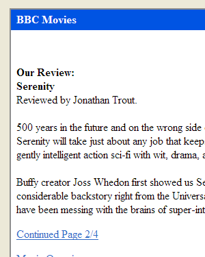
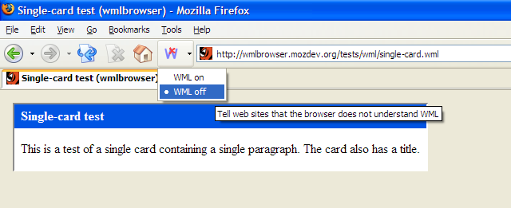
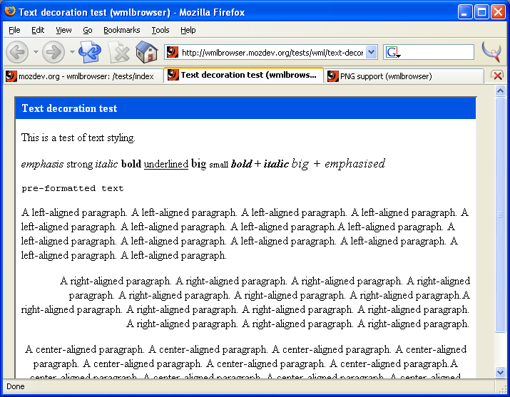
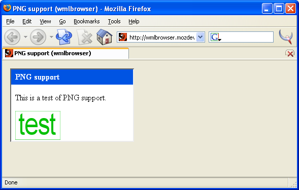
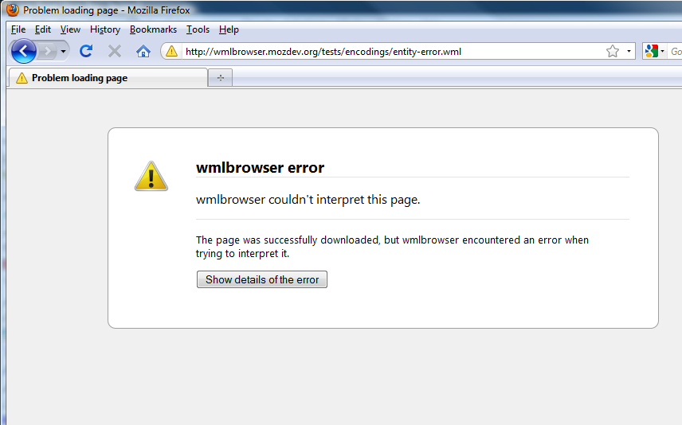
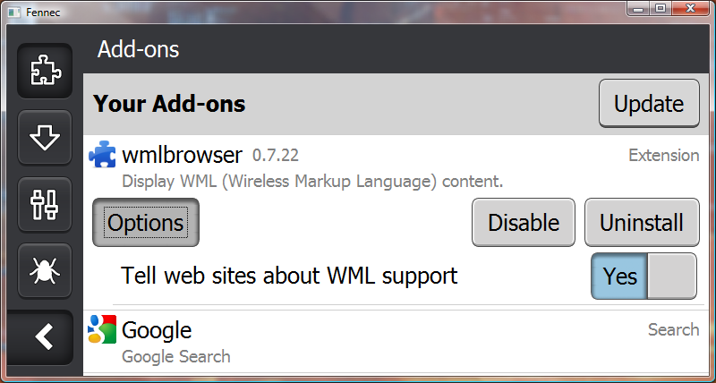

<h2 class="page-header">Screenshots</h2>

<h3>Sample page (select image for larger version)</h3>
<a href="screenshots/serenity.png"></a>

<h3>Customisable toolbar button</h3>


<h3>Test of text styling</h3>


<h3>Test of PNG support within WML</h3>


<h3>Firefox 1.5-style error page</h3>


<h3>Options window in Fennec</h3>

